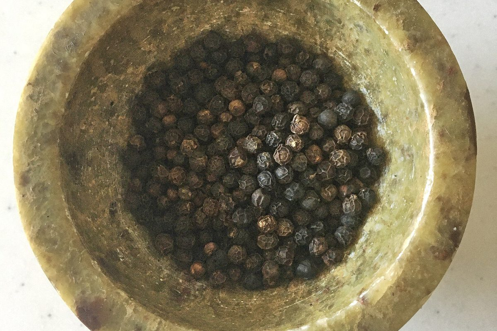
Black Pepper (Kali Mirch)
Piper nigrum • Western GhatsAncient “Black Gold” of the Malabar Coast. Imparts sharp, penetrating piperine heat and pinene warmth.
Explore Detailed Guide →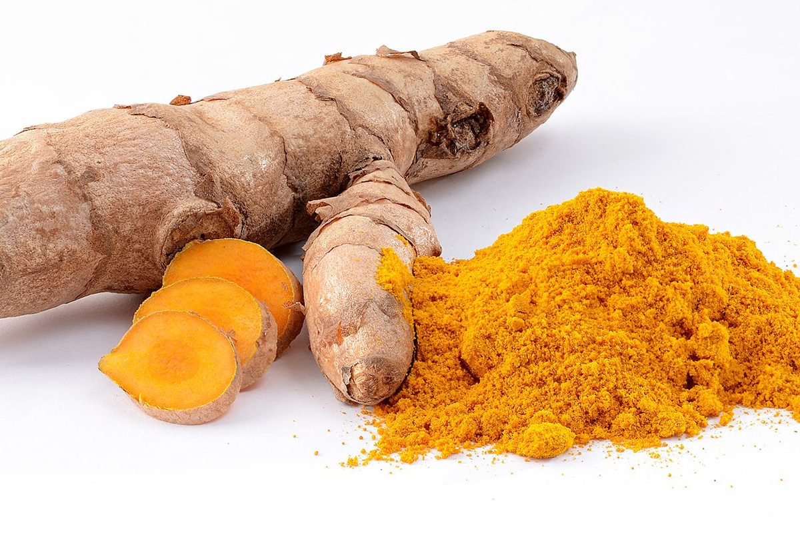
Turmeric (Haldi)
Curcuma longa • South AsiaThe sacred golden rhizome. Imparts deep yellow hues, warm earthy tones, and potent curcumin bioactives.
Explore Detailed Guide →
Green Cardamom (Chhoti Elaichi)
Elettaria cardamomum • KeralaThe Queen of Spices. Intensely floral, sweet eucalyptus aroma beloved in royal biryanis, chai, and kheer.
Explore Detailed Guide →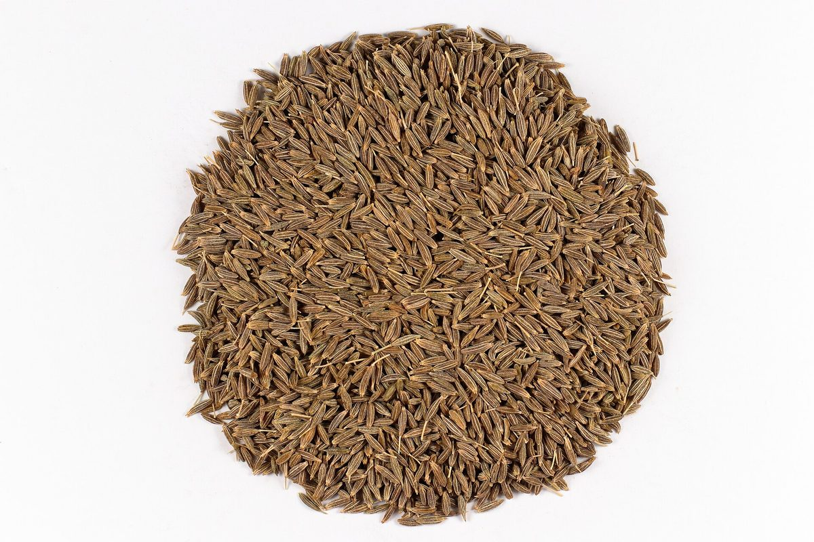
Cumin (Jeera)
Cuminum cyminum • Gujarat & RajasthanFoundation of everyday tadka tempering. Earthy, nutty, and transformative when dry-roasted on a tawa.
Explore Detailed Guide →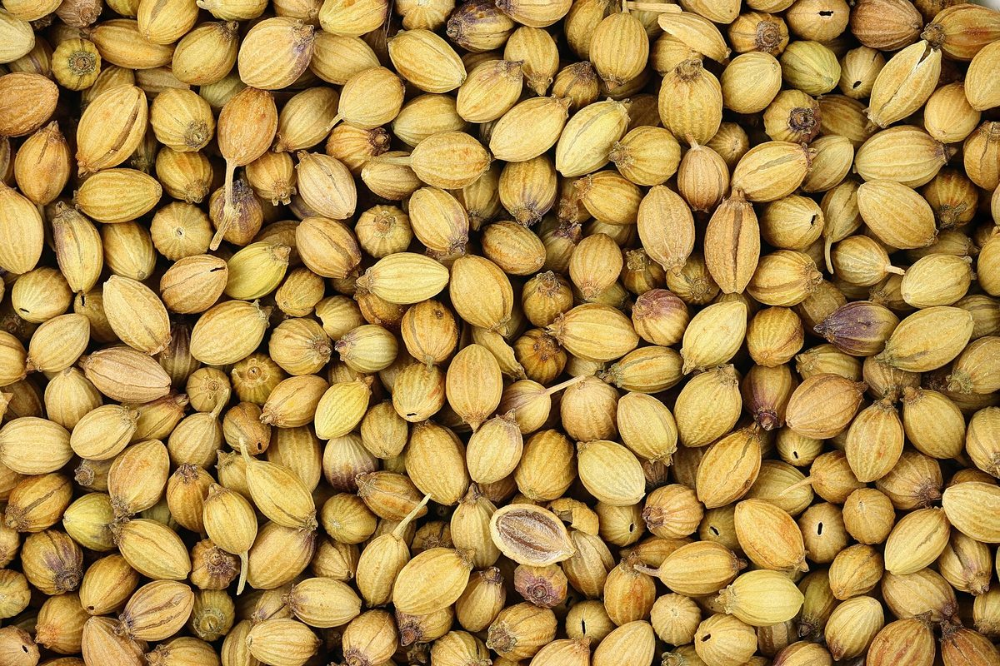
Coriander (Dhania)
Coriandrum sativum • Central & West IndiaGentle, citrusy, and floral. Provides essential gravy-thickening body in curry foundations and spice rubs.
Explore Detailed Guide →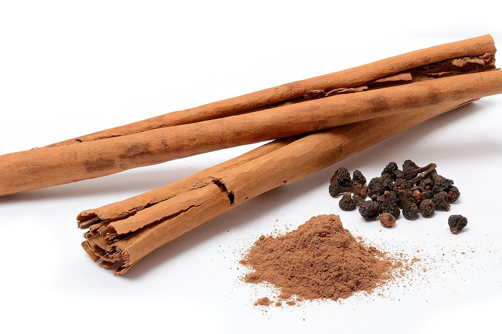
Cinnamon (Dalchini)
Cinnamomum verum • South IndiaFragrant sweet inner bark. Essential in royal Mughlai kormas, dum biryanis, and whole khada masala.
Explore Detailed Guide →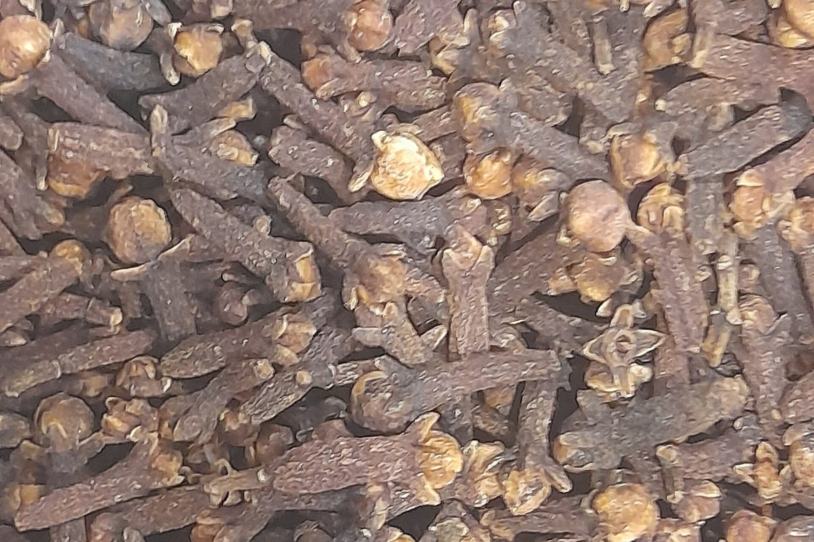
Cloves (Laung)
Syzygium aromaticum • Coastal IndiaIntensely fragrant dried flower buds rich in numbing eugenol oil. Crucial for Awadhi dhungar smoking.
Explore Detailed Guide →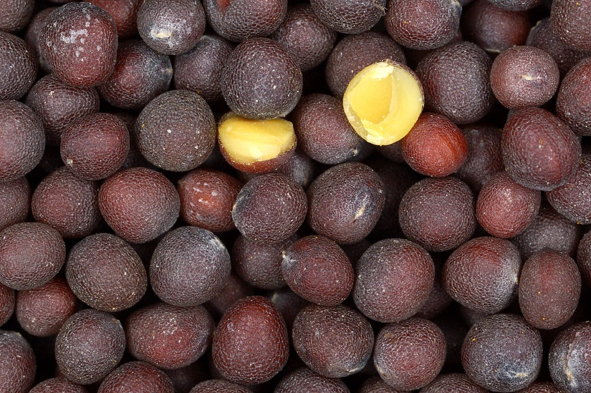
Mustard Seeds (Rai / Sarson)
Brassica nigra • Bengal & South IndiaTiny dark seeds that pop in hot oil with nutty, wasabi-like pungent heat. The heart of Bengali fish and South Indian curries.
Explore Botanical Profile →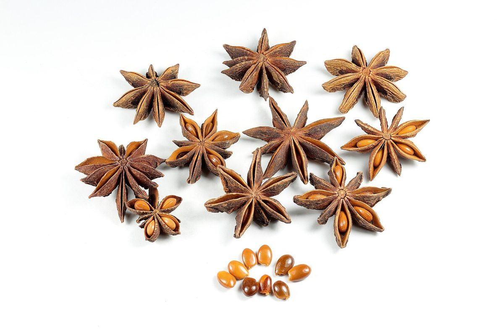
Star Anise (Chakra Phool)
Illicium verum • Arunachal & South IndiaEight-pointed star pods with an intense licorice-sweet aroma. Secret to Chettinad chicken and Hyderabadi biryani broth.
Chettinad Signature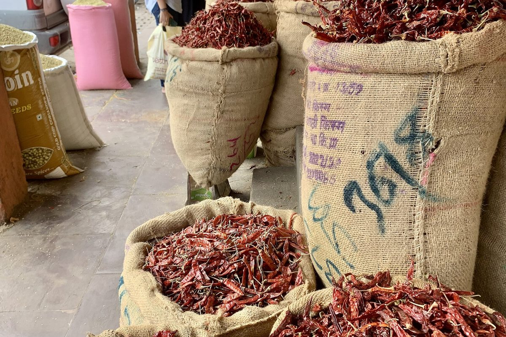
Kashmiri Chilli (Lal Mirch)
Capsicum annuum • Kashmir ValleyWorld-famous for vibrant crimson oil-soluble capsanthin pigments with mild, smoky warmth that won’t overpower delicate dishes.
Rogan Josh Essential
Fenugreek (Methi Dana)
Trigonella foenum-graecum • RajasthanAmber angular seeds with a pleasant maple-bitter aroma rich in sotolon. Balances sour tamarind and catalyzes golden dosa browning.
Explore Detailed Guide →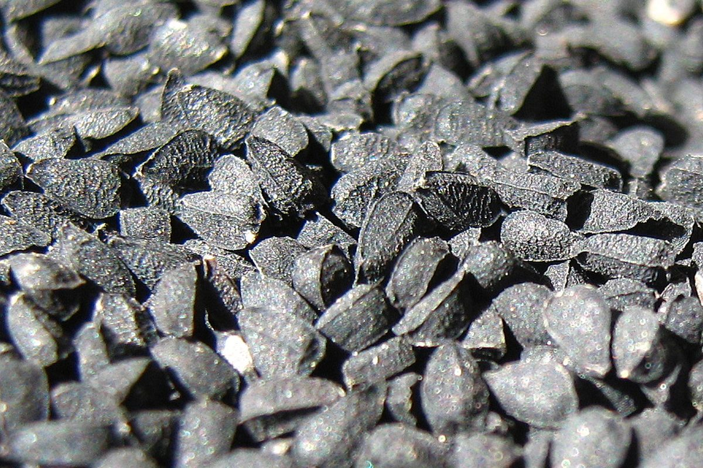
Nigella Seeds (Kalonji)
Nigella sativa • North & East IndiaMidnight-black triangular seeds rich in thymoquinone. Releases toasted onion and wild oregano perfume in Panch Phoron and naan breads.
Explore Detailed Guide →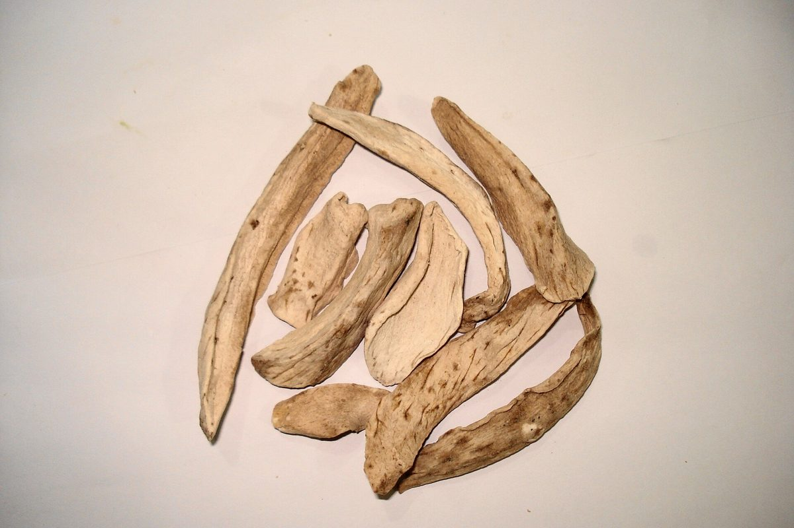
Dry Mango Powder (Amchur)
Mangifera indica • North & Central IndiaStone-ground from sun-cured unripe green mangoes. Delivers mouth-watering tartness to samosas and chaats without adding moisture.
Explore Detailed Guide →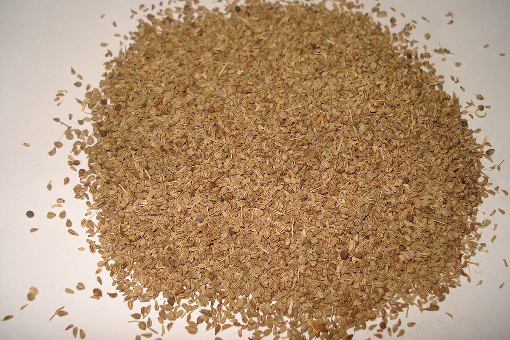
Carom Seeds (Ajwain)
Trachyspermum ammi • Rajasthan & GujaratPungent ridged seeds bursting with medicinal thymol. Indispensable for crispy samosa crusts, parathas, and digestive comfort.
Explore Detailed Guide →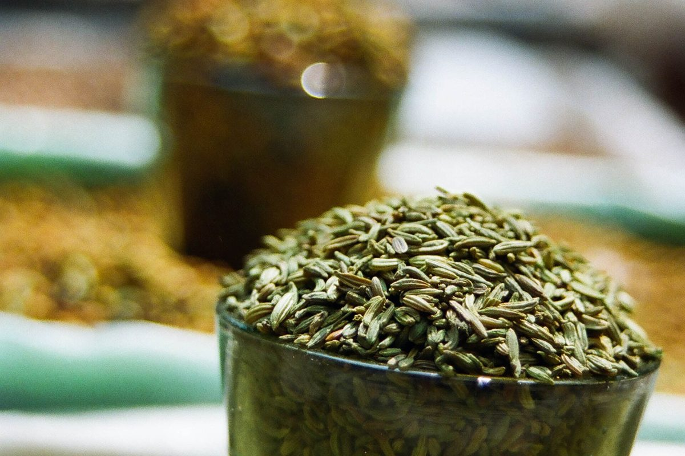
Fennel (Saunf)
Foeniculum vulgare • Gujarat & RajasthanSweet, licorice-scented green seeds — a panch phoron essential and India’s favourite after-meal digestive.
Explore Detailed Guide →